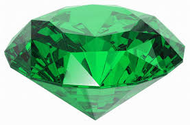

CHAPTER ONE ^O^
Today is a sunny day. Mary is having a good time @v@. Suddenly, she saw a green light behind the bushes. She had suddenly become curious, so she ran to the bushes to take a look.
It was a huge green diamond! She quickly realized it was Monk diamond, the most famous diamond in the world! She was so suprised that she was spinning in her head. She was afraid that if a police passed by, she will say that it was Mary who stole the diamond because yesterday, she and her mom was staying up late watching TV. They saw the news report was about the lost diamond, even the newspaper was also about the diamond.
CHAPTER TWO *u*
Suddenly, a policewoman passed by. Luckly,the police was very kind and polite. She politely asked: "May I take the Monk diamond away?" Mary answered: "Okay." and so the police take it away.
Suddenly, Mary's mobile phone(she always bring a mobile phone with her just in case)started beeping in her pocket. She take her mobile phone out to check what was going on. The police staition had send a message to Mary! She wondered why the police staition had send her a message so she opened the message to take a look(Mary is a very curious little child). What she saw made her jump with surprise. The polices had exaim the diamond and proved it was FAKE! Mary fainted. When she opened her eyes again, she found herself at the police staition. She found her whole family surrounding her. She asked her mom "What...what is happening to me?" Mom said "You fainted. But then I and your brother, your sister and your dad found you. We were afraid of that you might be sick or something"
CHAPTER THREE XD

Mary was very relived that her family had found her. But she had some important things to do. She had to find out WHO had stole the diamond and WHY did she/he do this. She told the whole story to her family, and they were shocked. But luckly they all said "Of course we will help! It's a pleasure!"\^o^/ Yay! @v@ thought Mary. She always love getting help from people, and, of course, she LOVED helping people too!*v*
Today(Friday, 30 November 2018), Mary and her family"s adventure had begin. First, they went to the museum to look for clues. They didn't find lots of clues, only a paper. The first paper said "Go to the cave. love Anniebay" Mary said:"Huh? WHO is Anniebay? and I don't think I understand. There are loads of caves in the mountain. There are Butterfly cave, Diamond cave, Monkey cave....." Suddenly, Mary's sister jumped "I think I know! We are hunting for a diamond, not a butterfly, nor a monkey. So... That means we need to go to the Diamond cave!" Mary's dad said "How are you sure?" Mary's sister said "Well, I'm not sure. But I think we can still go there to check."
CHAPTHER FOUR :D
When they reached the cave, they saw a sign in front of the cave:"PIRATE ANDROID'S CAVE" Mary's family turned to look at each other. They nodded together, and winked at each other the same time(In Mary's home, it means they are all thinking the same thing). They were all thinking that pirate Android was the one who stole the diamond. Then Mary whispered "I don't feel right here. We should keep hiding, in case of that Android might be back in a moment." They all agreed, so they turned to hide in the bushes. Mary's brother asked "Does anyone bought a phone or binoculars?" Mary's mom said: "You are a genius, Matthew(that's Mary's brother's name)! Mary, you can take the binoculars and watch if Android had come. If he comes, don't shout. Just make an "Ok" sign. Then Kitty(Mary's sister) can use my phone and call the police. But beware: If Android heared you or saw you, we could be in big trouble." "For the binoculars, use mine." Mary's sister pulled out a pair of brand new yellow binoculars and handed them out to Mary.
CHAPTER FIVE (@u@)
Suddenly, they heard footsteps coming closer and closer. Mary saw Android, and made an "Ok" sign, and her sister started dialing "999". She also called detectives, to find out where did Android put the diamond.
The polices arrived quickly, the detectives, too. The polices and detective make way: and a professor steped out. He was wearing tiny glasses on his nose. Mary's mom suddenly realized it was her friend in the university! "Professor sparkle!" Cried Mary's mom. "Lea! It had been years sence we see each other!"
CHAPTER SIX #w# (which was the longest chapter and also the funniest)
Then they began to chat..."Lea, I just invented a new machine. It can travel through time, and it's called "Human Mover 10898". It's the most fantastic machine ever!" Mary's mom cheered "Proffessor, you're a genius! I can't wait if you take me in one of those adventures!......" Matthew finnaly spoke up "Ummm, I hate to say this, but I think we should not chit-chat in this kind of place. We should be finding Android now." Professor nodded and then grinned:"You're right, little guy." Suddenly someone else behind them laughed in an icy voice. They turned around slowly and saw they were face to face with...... The one you-know-who. It was Android! But to their surprise, Android looked kind of old. But still his eyes were icy and cold. "W...w...we...were YOU ttt...th...the theif o...of th..e...the Mo...nk...Monk Dimo...Dimond?!" Mary stammered. She can't even put words toghether because she was afraid if Android got a gun and KOed them, and she wished the bullets were strawberry candies so that she could eat them. "Huh, yes it was me. But the dimond was already lost, so I am not giving it back. Try and catch me!" Android laughed, and ran. Mary gasped "Wow. I never saw someone run that fast..." The policemen chased Android.Android ran, with the policemen chasing behind. Even if Android is old, he still runs very fast. He was tooo quick for them. After some time, the policemen catched up. Suddenly, Android said "Look! There is an UFO there!" He pointed up. The policemens stopped and looked up, but they forgot that they were in the cave, not outside. Android laughed "Bye-bye guys!" Then he ran far ahead from the policemen. Luckily, Android's hair was longer then normal. So it's easy to be tangled, and the cave is full of branches, so when Android was running, his hair was tangled to a long one. Android didn't notice, and he kept running. Suddenly, SNAP! Android's hair snapped into two pieces! And he shouted really loud "AWW! OUCH! IT HURTS!" And he stopped running, and the policemen catched up. This time Android can't escape, and they handcuffed Android, and ran out the cave and to a deep cliff's edge and said sternly to him "Tell us where the dimond is. Immediently, or go down the cliff!" With a sigh, Android said "It's in the cave. It is in the head of the cave. You will find a blue box there. The number is "1375", and you will see it."
CHAPTER SEVEN /^o^\
Following Android's instructions, they found the box and opened it. Mary cheered "The dimond is back! the dimond is back!" The Proffeser smiled "Thanks to you all, for helping me find the dimond. I will treat you guys to a dinner in a buffet! How about that?" Mary's mom said "Oh thank you Proffeser, thats a good idea!" And they went to have a nice dinner. THE END